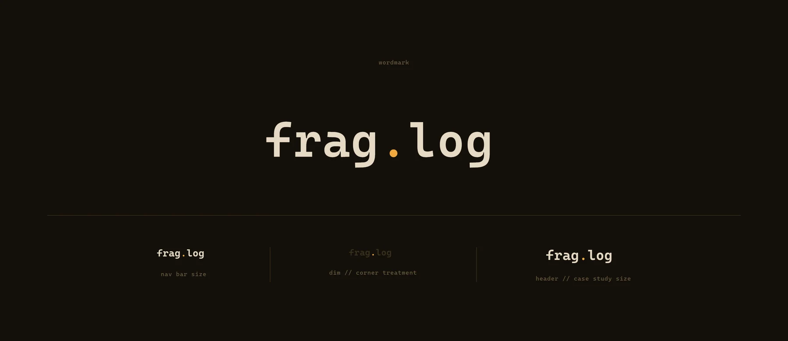
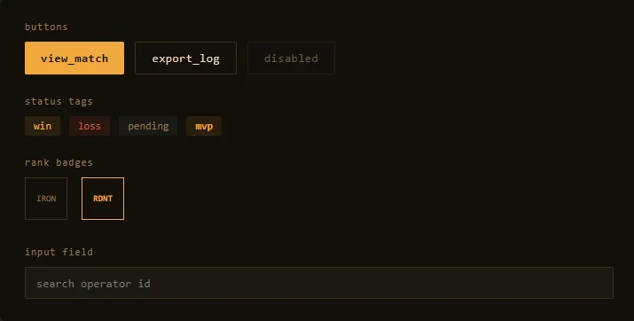
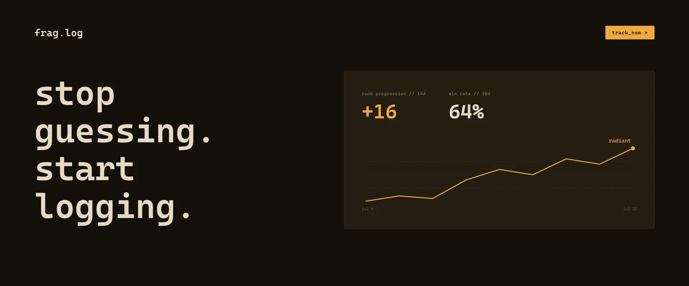
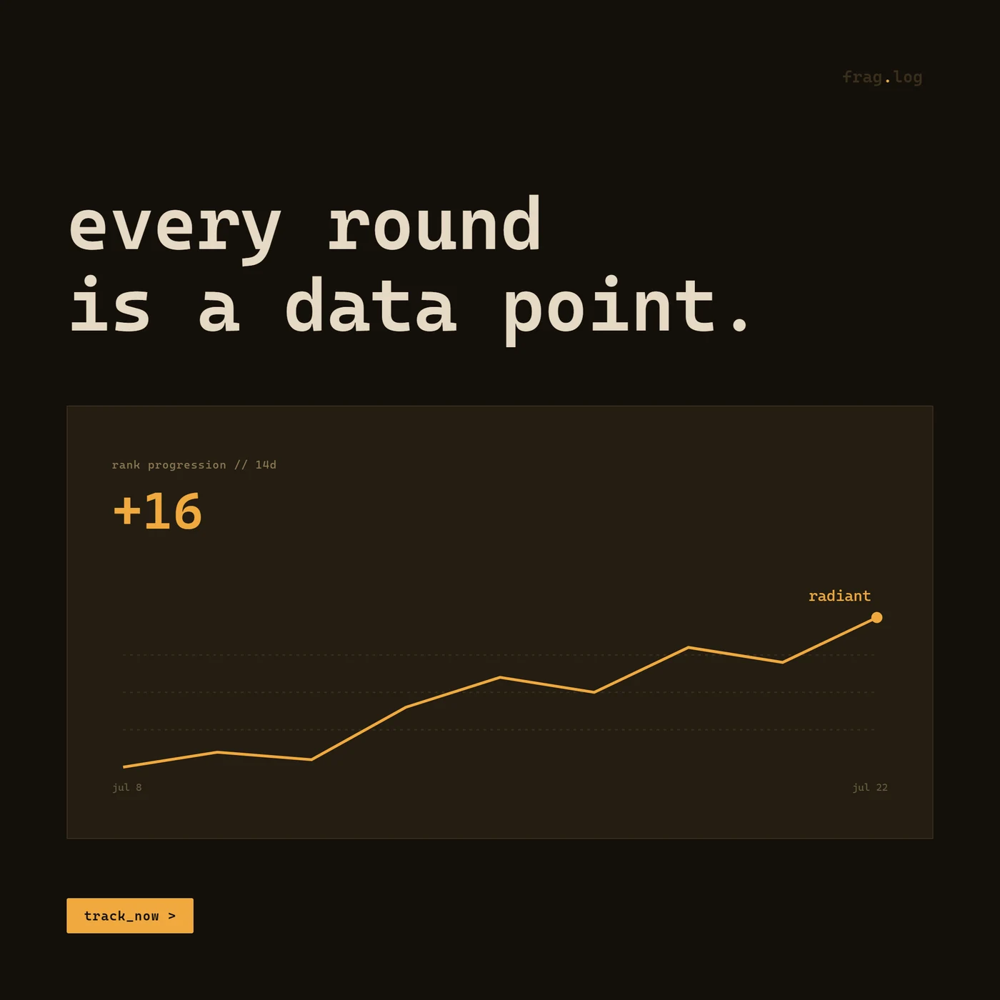
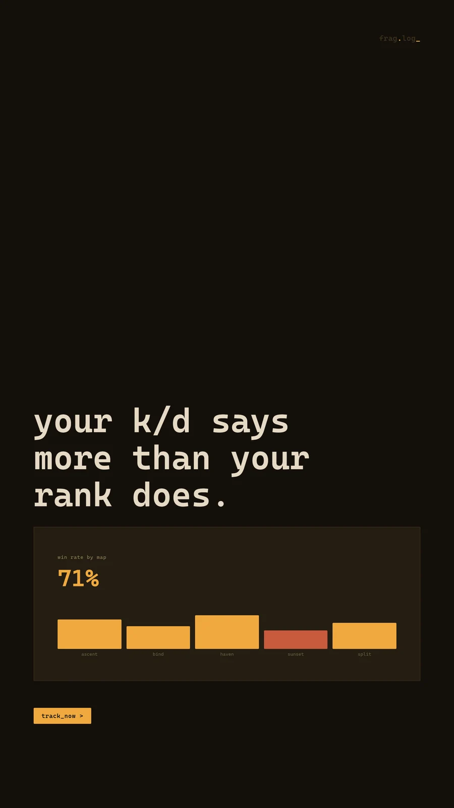
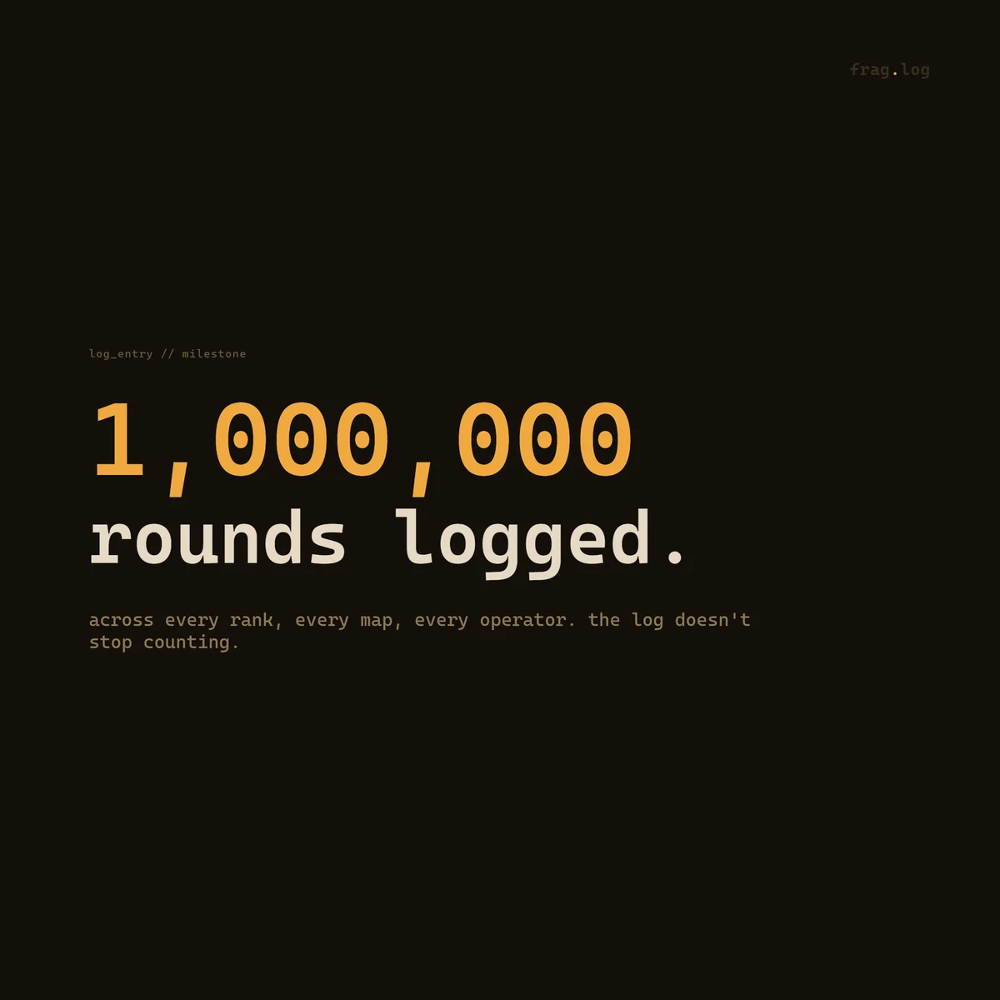
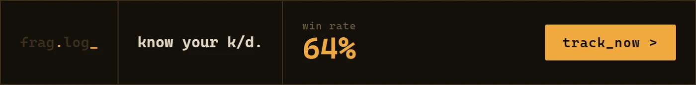

FRAG.LOG—Terminal, With One Earned Flash of Arcade
A stats-tracking product for competitive FPS players, built to look like a trading terminal instead of another neon esports dashboard—then coded into a real, working prototype.
The Problem
FRAG.LOG needed a stats tracker for competitive FPS players that didn't look like everything else in the category: neon-on-black, purple-blue gradients, glowing esports chrome. It reads as "gaming," but not as trustworthy, and a stats tool lives or dies on whether players believe the numbers.
The Approach
Instead of another esports dashboard, we looked at how serious data tools present information: trading terminals, flight boards, order books. Dense grids, minimal chrome, numbers that speak for themselves. Then we paired that discipline with one deliberate exception: a marquee moment for the numbers that matter most, treated like a scoreboard, not a spreadsheet cell.
The Solution
A single locked design system—palette, type, spacing, and voice—applied across five app screens, a five-piece ad campaign, and the wordmark itself. The final deliverable is a fully coded, working prototype, not static mockups, built to demonstrate the product exactly as it was designed.
Key Decisions
Two rules that hold the whole system together.
Color as a signal, not a mood
Most competitors reach for a broad, decorative palette: the more colors, the more "energetic" it's supposed to feel. FRAG.LOG goes the opposite direction: one accent color, amber, reserved strictly for wins, MVP performances, and hero numbers. Everything else stays neutral, so when amber shows up, it means something happened.
A voice that reports, not cheers
The product doesn't congratulate you. No exclamation points, no "Nice job!" Match results and milestones are written the way a system log would write them: lowercase, factual, present tense. "1,000,000 rounds logged." not "You did it!" That restraint is what makes the amber accent land when it finally does show up.
Five Screens, One System
Overview, match detail, agent breakdown, ranked ladder, and season profile—click through to browse the working prototype.

The System
Every screen, ad, and brand asset pulls from a single locked design system: palette, type, spacing, and voice rules defined once and applied everywhere.


One Recurring Motion Signature
Outside of this, motion stays minimal and functional: no bounce, no confetti on wins. The blinking cursor is the one place the product is allowed to feel alive.
Campaign
Same base palette and monospace type as the product: the ads look like an extension of FRAG.LOG, not a separate marketing register.





Deliverables
Not static mockups—a fully coded, working prototype, ready to demonstrate the product exactly as it was designed.
- Five core app screens: overview, match detail, agent breakdown, leaderboard, and profile
- A five-piece ad campaign sharing the product's own visual language
- Wordmark system with nav, corner-mark, and header-scale treatments
- A locked design system: palette, type, spacing, components, motion, and voice rules
- A fully coded interactive prototype, built screen-for-screen from the design system

Building a product that needs its own voice?
Let's design a system disciplined enough to earn its one loud moment.